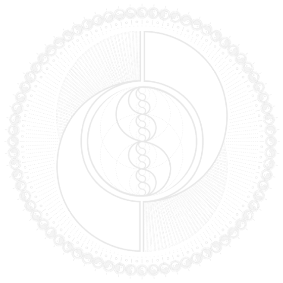
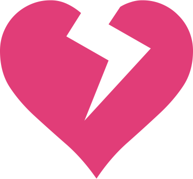

Близость
Искусство Трансформационного Общения
3-дневный марафон, который научит тебя выстраивать близость в отношениях
16, 17 и 18 июня в 19:30
Я хочу!
16, 17 и 18 июня в 19:30

Нас не учили искренне и эффективно общаться
Мы не умеем выстраивать истинную близость

И так сильно о ней мечтаем!
Близость с другими — это то, что делает нас по-настоящему живыми, счастливыми, и человечными
Узнаете себя?
Не умею общаться. Мне кажется, я скучная и неинтересная
Пытаюсь объяснить папе свою позицию, он только отмахивается от меня. Никак не могу достучаться
У нас очень много проблем в отношениях с мужем, но он отказывается их обсуждать
Пытаемся разговаривать, но скатываемся во взаимные претензии и обвинения
Очень сложно общаться с дочерью-подростком, она в полном отрицании всего, что я говорю
Раньше была близость в отношениях, но сейчас он отдалился и я не понимаю, что происходит
Вроде бы общаемся хорошо и близко, но я все равно ощущаю порой одиночество. Как будто никто меня по-настоящему не видит
Подруга вроде бы поддерживает меня и относится по-доброму, но после нашего общения остается странный неприятный осадок, не понимаю почему
Мой босс - тиран. Разговаривать с ним бесполезно, он никого не слушает, существует только его мнение
Мама говорит, что делает все ради меня и моего будущего. Но меня это только раздражает! Она обижается, что я не могу нормально с ней общаться
Существует особая система общения, используя которую вы сможете восстановить потерянную близость и научитесь легко и быстро создавать ее в новых отношениях.
И я покажу ее вам.
И я покажу ее вам.
Ясность.Глубина.Близость

Этот марафон о том, как общаться с другими людьми для того, чтобы выстраивать настоящие отношения. Искренне, качественно и аутентично.
Программа марафона
Не умею общаться. Мне кажется, я скучная и неинтересная”
С кем получится создать близость, а от кого лучше бежать? Красные флаги в отношениях
5 главных принципов создания глубокой и искренней близости
Простые способы легко создать доверие с новыми людьми
Стоп-фразы, которые говорят о манипуляциях
Практика и разборы ваших ситуаций
Вы удивитесь, насколько близко удовлетворение, глубина, близость и искреннее, наполняющее общение. Они буквально в паре фраз от вас. В паре
работающих фраз.
работающих фраз.

Близость
Искусство Трансформационного Общения
Зарегистрироваться на марафон
Через соц. сети
Через почту